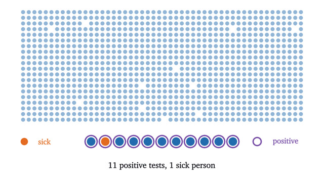
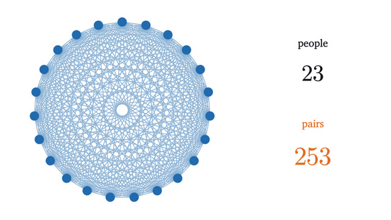
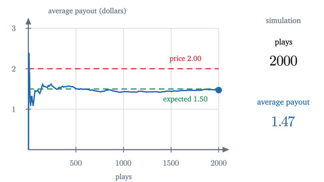
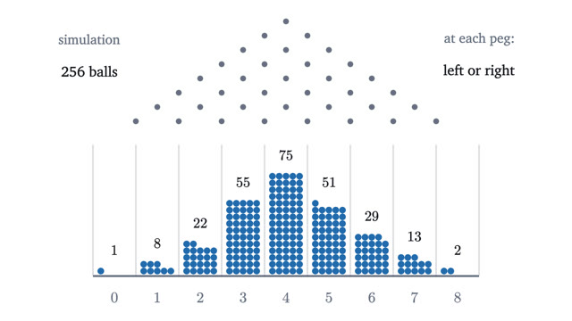
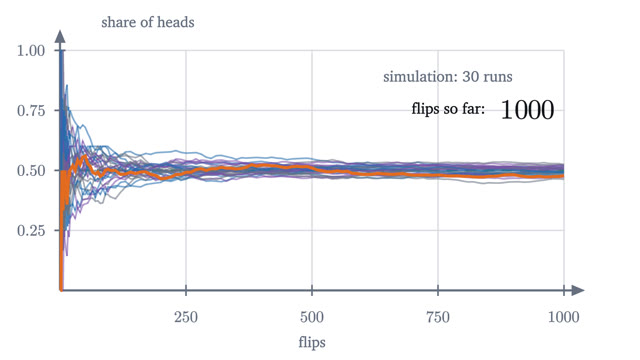
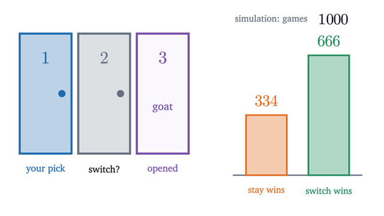

Probability
Counting outcomes, updating beliefs, and why coincidences are common.
The series starts from counting equally likely outcomes and stays close to that definition. Conditional probability and Bayes' rule come second, and the birthday problem shows how quickly pairs accumulate. Expected value, the binomial distribution and the law of large numbers describe what happens over many trials, and Monty Hall closes the series as a test of everything before it.
Start with lesson 1-
1
What probability means: counting equally likely outcomesIs a total of 7 with two dice three times as likely as a 12, or six times? Settling it leads to sample spaces, events and the rules every probability obeys.

-
2
Bayes' rule: why a positive test is usually a false alarmA 99% accurate test for a rare disease comes back positive, and the chance you are sick is about 9%. Conditional probability and Bayes' theorem explain why.

-
3
The birthday paradox: why 23 people is enoughIn a room of 23 people, two probably share a birthday. The exact formula, why the answer grows like a square root, and what the model assumes.

-
4
Expected value and the surprising power of adding averagesThe expected value of a random quantity is its long-run average. Expected values add even for dependent quantities, which solves the hat-check problem.

-
5
Binomial distribution: Pascal's triangle and a Galton boardBalls bouncing through rows of pegs pile up in the middle. Counting their paths gives Pascal's triangle and the binomial formula, with its mean and variance.

-
6
The law of large numbers, and the gambler's fallacyA fair coin has no memory, yet its share of heads settles at one half. The weak law of large numbers says exactly how, and Chebyshev's inequality proves it.

-
7
Monty Hall problem: why switching wins two times in threeThree doors, one car, and a host who opens a goat door. Switching wins 2/3 of the time. Three solutions, and why the answer depends on what the host knows.
